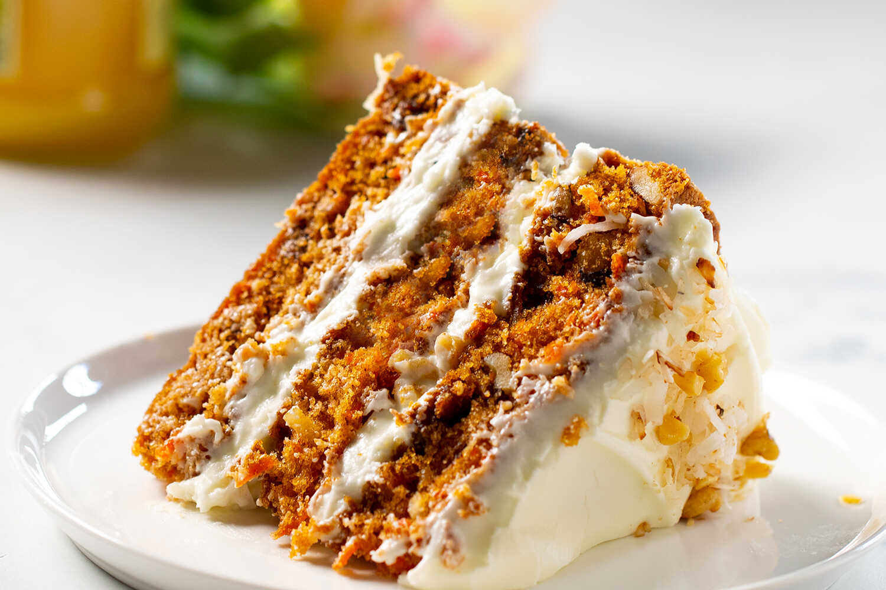

Carrot Cake

Morotskaka
Ingredienser
kaka:
- 300 g morötter (4-5 medelstora morötter)
- 1 dl farinsocker
- 2 msk malen kanel
- 1 msk malen kardemumma
- 2 tsk malen ingefära
- 6 ägg
- 5 dl strösocker
- 2,5 dl neutral olja (raps-, mat- eller solrosolja)
- 1 msk vaniljsocker
- 1 msk bakpulver
- 6 dl vetemjöl
Frosting:
- 600 g färskost
- 300 g rumstempererat smör
- 2 tsk vaniljsocker
- 4 dl florsocker
- rivet limeskal från 2 lime att dekorera med
Instructions
click her to read the instructions
"One cannot think well, love well, sleep well, if one has not dined well." - Virginia Woolf